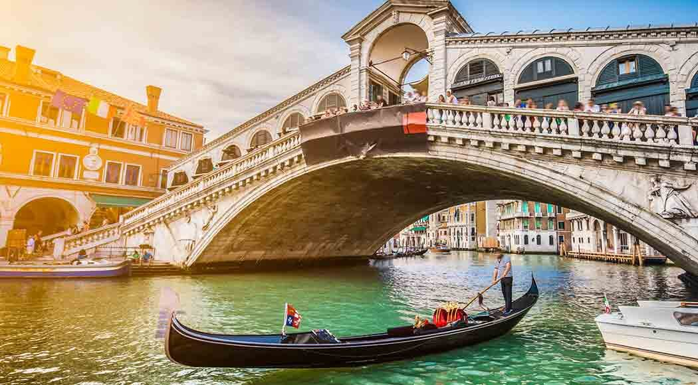
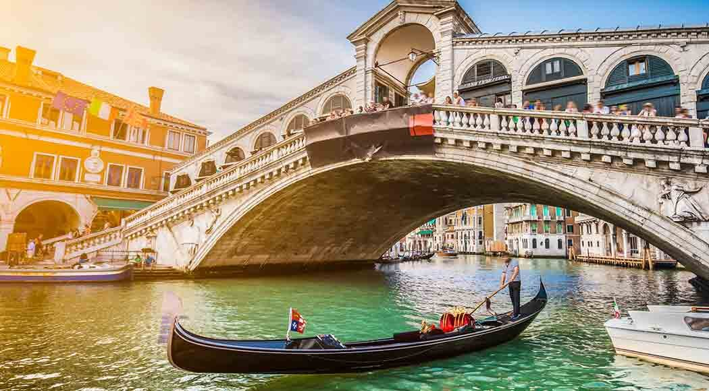

Veneza
Veneza (em italiano: Venezia, em vêneto: Venexia, IPA: [veˈnɛsja]) é uma cidade no nordeste da Itália situada sobre um grupo de 117 pequenas ilhas
separadas por canais e ligadas por pontes. Ela está localizada na pantanosa Lagoa de Veneza, que se estende ao longo da costa entre as bocas dos rios Po e
Piave. Veneza é famosa pela beleza de sua arquitetura e obras de arte. Uma parte da cidade está listada como um Patrimônio Mundial, juntamente com a sua lagoa.
Veneza é a capital da região de Veneto. Em 2009, havia 270.098 habitantes na comuna de Veneza (a estimativa de população de 272 mil habitantes inclui a
população de toda a comuna de Veneza) dos quais cerca de 60 mil vivem na cidade histórica de Veneza (centro storico); 176 mil em Terraferma (continente),
principalmente na grande frazioni (equivalente a "paróquias" ou "divisões" em outros países) de Mestre e Marghera, além de 31 mil em outras ilhas da lagoa).
Junto com Pádua e Treviso, a cidade está incluída na área metropolitana de Pádua-Treviso-Veneza (PATREVE), com uma população total de 2,6 milhões de pessoas.
O nome é derivado do antigo povo veneti, que habitou a região até o século X a.C. A cidade foi a capital da histórica República de Veneza e é conhecida como
o "La Dominante", "Serenissima", "Rainha do Adriático", "Cidade da Água", "Cidade Flutuante" e "Cidade dos Canais". A República de Veneza foi uma grande potência
marítima durante a Idade Média e o Renascimento, além de ser um ponto de parada para as Cruzadas e a Batalha de Lepanto, bem como um centro comercial muito importante
(especialmente de produtos como seda, fibra e especiarias) e artístico entre o século XIII até o final do século XVII. Tamanha importância fez de Veneza uma cidade
rica em quase toda a sua história.